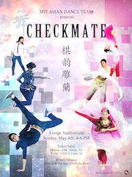

MIT ADT performs at many functions each year, from our semesterly showcases to external events at Harvard, Wellesley, Boston University, and more! Please click the corresponding link to learn more about our performances!


Upcoming Performances
Fall 2014 Showcase: Rebirth
We will have three performances of our Fall 2014 showcase: Thursday, December 11, 4-6pm; Thursday, December 11, 7:30-9:30pm; and Friday, December 12, 4-6pm, all in MIT Kresge Little Theatre. Come see us perform spectacular Han, Yi, Chaoxian (Korean), and Tibetan ethnic pieces, classical and contemporary dances, as well as hip-hop pieces by 2NE1, APink, U-Kiss, and BTS! We will also host guest performances from groups including MIT Lion Dance, Syncopasian, the Ohms, Bhangra, and Mirchi!
Tickets are $5 for MIT affiliates. For general admission, tickets are $7 if bought early and $10 at the door. All tickets reserved through EventBrite are paid for at the door and are charged the early price - $5 for MIT affiliates and $7 for general admission. Admission is free for children under 10 years of age. Tickets may be purchased at the following locations:
Wednesday, Dec 3 - Friday, Dec 5: Lobby 10
Monday, Dec 8 - Wednesday, Dec 10: Student Center
Tickets can also be reserved online through Eventbrite. MIT Kresge Little Theatre is a small venue, so please be sure to arrive 15 minutes early or your ticket may be resold.
Showcases
Click on the images below to learn more about our setlist and repertoire! Feel free to also browse our photo gallery and performance videos!
|  |  |
 |
| Checkmate | Illusions | Inspirasian |
| Spring 2014 | Fall 2013 | Spring 2013 |
 |
 |
 |
| Limitless | Inspirasian | Unforgettable |
| Fall 2012 | Spring 2012 | Fall 2011 |
 |
 |
 |
| Inspirasian | Resonant Blue | Phoenix Rising |
| Spring 2011 | Fall 2010 | Spring 2010 |
External Performances*
MIT SAO Office Multicultural Holiday Feast
MIT Family Weekend Fair
MIT NightMarket
McCormick Anniversary Event
SEALnet Performance
MIT Mid-Autumn Gala
Ashdown Mid-Autumn Event
MIT Sidney-Pacific Orientation Dance Party
GSC Orientation International Mentorship Mixer
MIT Class of 2017 New England Aquarium Orientation Event
MIT Class of 2017 Activities Midway
MIT Sidney-Pacific Cultural Festival
Inspirasian 2013: the 3rd Annual Boston Asian Performing Arts Festival
Epec Engineering Technologies Retirement Party
MIT ISA iFair
AXO LipSync
MIT China Care
MIT Relay for Life
Boston University Lunar New Year Festival
Babson College Chinese Student Association Chinese New Year Festival
MIT Association of Taiwanese Students Lunar New Year Festival
Boston Globe Travel Show
Boston University China Care Hope Show
Brandeis University Lunar New Year Festival
'Limitless' 天記夢台 Fall 2012 Showcase
MIT Nightmarket
MIT CSSA Mid-Autumn Chinese Alumni Reunion
MIT Ballroom Dance Team Fall Showcase
MIT Activities Midway 2012
MIT Class of 2016 New England Aquarium Orientation Event
Harvard Korea Society Korean Culture Festival
Tufts Vietnamese Student Club Culture Show
*Only performances after August 2012 are listed.